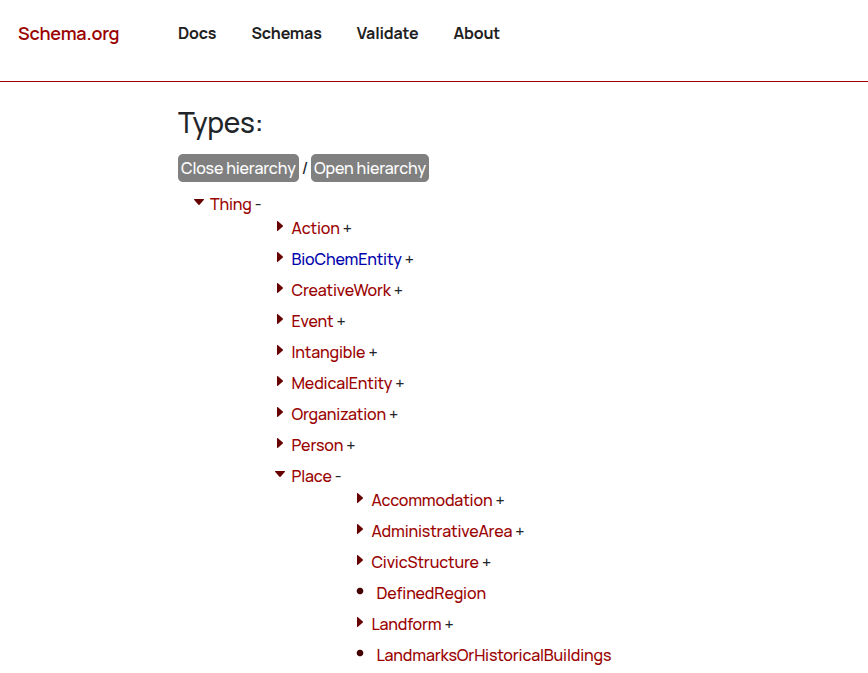
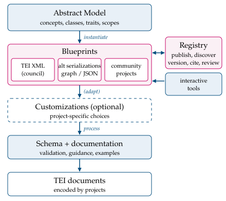
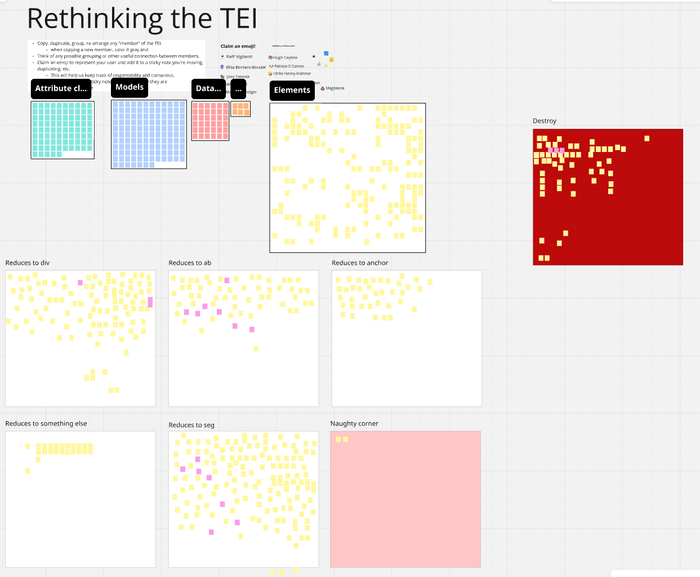
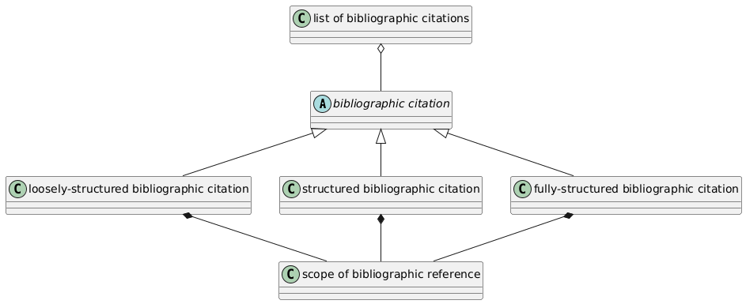
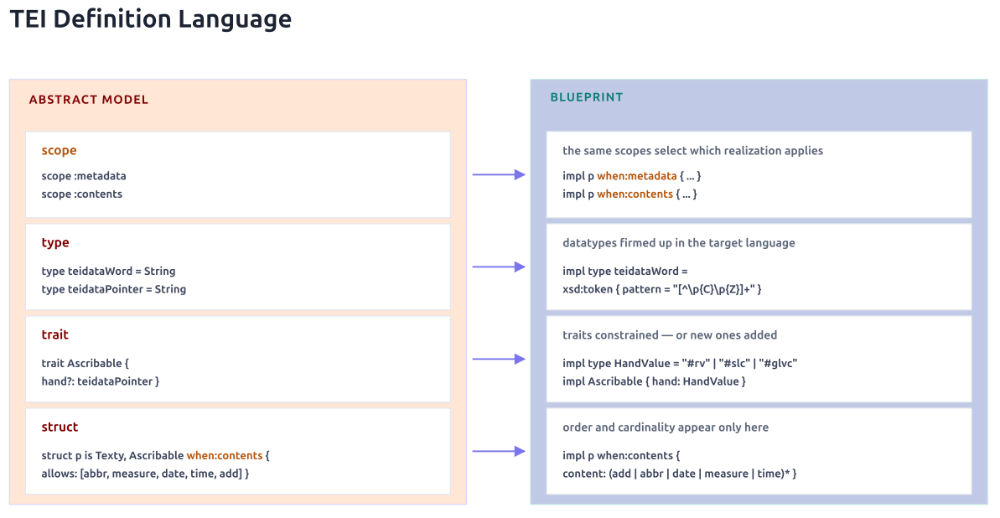

by the TEI Technical Council
<rs> should contain <q> and <quote> (closed #1531)<row> and <cell> within <rdg> and <lem>? (#2000)<name type="person"> vs. <persName><ref> and <ptr>@ref, @corresp, @key<standOff>?<surface> and <zone>) , vs. semantic structures (<text> and <div>).Abstract Modelis not abstract enough
A document is said to conform to the TEI Abstract Model if features for which an encoding is proposed by the TEI Guidelines are encoded within it using the markup and other syntactic properties defined by means of a valid TEI-conformant schema. Hence, even though the names of elements or attributes may vary, a TEI-conformant document must respect the TEI Semantic Model, and be valid with respect to a TEI-conformant Schema. Although it may be possible to transform a document which follows the TEI Abstract Model into a TEI-conformant document, such a document is not itself conformant.
As noted above, the notion of semantic conformance cannot be completely enforced in a formal way. The TEI conceptual model is expressed by means of formal specification in a customization file, by means of descriptive prose in the body of these Guidelines, and implicitly by examples of usage. Any inconsistency between, for example, the text of these Guidelines and a part of a specification should be considered an error and reported to the TEI Council for correction. –source: USE chapter, TEI P5 Guidelines
Semantic Modelisn't really abstract, when it relies on schema definitions, descriptive prose, as well as examples of usage.
<p> in fileDesc/sourceDesc vs. <p> in body/div require different content models<altIdent> to define two different patterns. (It's difficult for most of us to know how to do that!
And it should be trivially easy.)att.global.rendition get this way?
Why do we need three attributes for describing rendering in the source text?standOff data structures together with trees for preparing editions and dataP5 has too many ways of doing (much) the same thing., but it is not only the thing that has to be done, but also the way it is done that needs to be appropriate.
<pb>, every other edition nerd understands we are talking about page-beginning.
Possible inspiration: schema.org

Blueprints...

Council members have spent some independent time experimenting with ideas for P6, but ...


